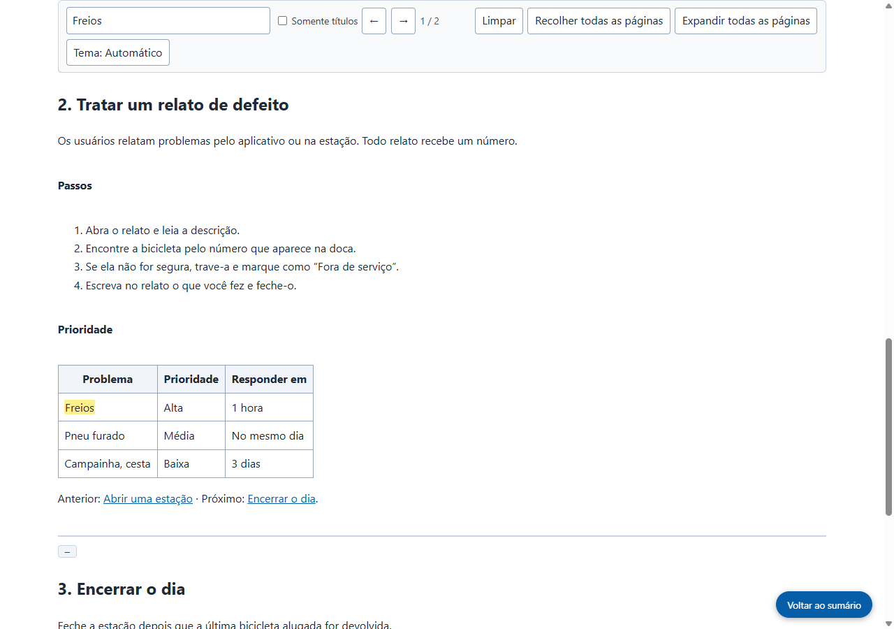

Resultado real do Grab All Files
Quatro páginas do manual reunidas em um único arquivo HTML (Pro)
A partir da página de sumário de um manual fictício, os três capítulos ligados a ela foram seguidos e as quatro páginas foram reunidas em um único arquivo HTML. O sumário no topo leva a cada capítulo, e a caixa de busca pesquisa o documento inteiro. Os links entre capítulos levam à página correspondente dentro do arquivo salvo. A figura é guardada no arquivo como imagem.
Arquivos gerados
O HTML salvo, aberto e pesquisado por “Freios” (captura de tela feita pelo site)

Como foi feito
- Página de origem
- /samples/source/pt_BR/bike-share-handbook/
- Extensão
- Grab All Files 5.8.31
- Navegador
- Chrome 156.0.8078.48 (Windows 11)
- Plano
- Pro
- Feito em
- 2026-10-28
- Configurações
- Páginas: Seguir os links desta página (4 páginas)
- Aparência: Fácil de ler
- Saída: HTML com índice e pesquisa
- Dados para IA: Não gerar (padrão)